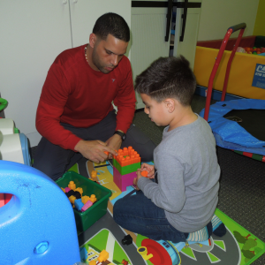
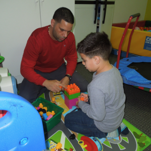

Spanish
Spanish
 English
English


Speech Tactics provides effective therapeutic interventions for a variety of articulation/phonological disorders that impact a person’s speech intelligibility. We develop individualized therapy plans and home exercise programs to meet the unique communication needs of each client. Speech sound disorders may include difficulty with articulation (making sounds) and phonological processes (sound patterns). Children acquire specific speech sounds at different developmental stages (age ranges) as they grow. Parents of children who have a speech sound disorder or speech delay usually say the following:
- “I do not understand my child most of the time.”
- “He/she gets frustrated when I do not know what he/she wants.”
- “My child is 6 years old and unfamiliar people are still having trouble understanding his speech.”
- “My child speaks too fast, sometimes I can’t understand him.”
- “My child can talk, he is just being lazy with saying sounds.”
- “My baby is not making any sounds yet at 6 months, should I be concerned?”
- “My child avoids speaking because it’s too difficult for him/her.”
- “I can understand my child, but there are certain sounds that he/she still says incorrectly.”

 

Our licensed Occupational Therapists (OTs) and COTAs provide effective and innovative ways to help children develop important skills for enhancing their daily activities at home, as well as in an academic learning setting. At Speech Tactics, our OTs implement therapy interventions to improve fine motor skills, gross motor skills, sensory processing, visual perception, motor planning, feeding aversions, self-care skills, handwriting, and disruptive behaviors. Typical daily activities are used during formal evaluations and during treatments to help children and adults with behavioral, developmental, neurological, and physical deficits acquire skills that will enable them to function independently. Our OTs help clients with things like:
- Feeding Therapy
- Holding a pencil
- Cutting a straight line
- Drawing circles
- Copying/writing letters and words
- Getting dressed
- Categorizing and organizing
- Sustaining attention for learning in the classroom
- Managing and processing sensory input
- Self-regulating behaviors
- Balance/coordination
- Muscle strengthening
- Trunk Strengthening
Feeding and/or swallowing therapy is provided to clients of all ages who have issues with chewing, manipulating, sucking, and swallowing foods or liquids. Interventions for feeding and swallowing may address muscle strengthening, tongue, lip, and jaw movement, texture tolerance, suck-swallow-breathe coordination, maneuvers for airway protection, behavior shaping, feeding positions/postures, and as always parent education and training.
Feeding is the process involving any aspect of eating or drinking, including gathering and preparing food and liquid for intake, sucking or chewing, and swallowing (Arvedson & Brodsky, 2002). Through the human feeding experience, parents and children can create pleasant and rewarding opportunities for communication and social exchanges.
Feeding disorders are problems with a range of eating activities that may or may not include problems with swallowing. Feeding disorders can be characterized by one or more of the following behaviors:
- Avoiding or restricting one’s food intake (avoidant/restrictive food intake disorder [ARFID]; American Psychiatric Association, 2016)
- Refusing age-appropriate or developmentally appropriate foods or liquids
- Accepting a restricted variety or quantity of foods or liquids
- Displaying disruptive or inappropriate mealtime behaviors for developmental level
- Failing to master self-feeding skills expected for developmental levels
- Failing to use developmentally appropriate feeding devices and utensils
- Experiencing less than optimal growth (Arvedson, 2008)
Swallowing is a complex process during which saliva, liquids, and foods are transported from the mouth into the stomach while keeping the airway protected. Swallowing is commonly divided into the following four phases:
- Oral Preparatory—voluntary phase during which food or liquid is manipulated in the mouth to form a cohesive bolus—includes sucking liquids, manipulating soft boluses, and chewing solid food.
- Oral Transit—a voluntary phase that begins with the posterior propulsion of the bolus by the tongue and ends with the initiation of the pharyngeal swallow.
- Pharyngeal—begins with the initiation of a voluntary pharyngeal swallow which in turn propels the bolus through the pharynx via involuntary peristaltic contraction of the pharyngeal constrictors.
- Esophageal—an involuntary phase during which the bolus is carried to the stomach through the process of esophageal peristalsis (Arvedson & Brodsky, 2002; Logemann, 1998).
Swallowing disorders (dysphagia) can occur in one or more of the four phases of swallowing and can result in aspiration— the passage of food, liquid, or saliva into the airway, below the vocal cords. Aspiration can exacerbate complex medical conditions and put children at risk for developing pulmonary issues. Consequences of feeding and swallowing disorders can include:
- food aversion
- child oral aversion
- aspiration pneumonia and/or compromised pulmonary status
- undernutrition or malnutrition
- dehydration
- gastrointestinal complications such as motility disorders, constipation, and diarrhea
- poor weight gain velocity and/or undernutrition
- rumination disorder (unintentional and reflexive regurgitation of undigested food that may involve re-chewing and re-swallowing of the food)
- ongoing need for enteral (gastrointestinal) or parenteral (intravenous) nutrition;
- psychosocial effects on the child and his or her family

Speech Tactics offers successful therapeutic remediation of expressive and receptive language delays in children of all ages. Evidenced-based strategies and techniques are used to stimulate overall language development and to teach language skills in an integrated fashion and in context to further enhance everyday communication. Parent education and training is a critical component to boost the family’s ability to support the child’s development at home. Services and supports are individualized for each child and family. Parents of children with a delay in language onset usually say the following:
- “My child is not saying any words; not even mama or dada.”
- “My child is using as many words as his peers at school.”
- “He does not repeated any words, however he does point to some pictures in a book.”
- “He/She does not put two words together to ask for something.”
- “My child is two years old and he/she says less than 50
words.”
The Teletherapy Division at Speech Tactics is composed of our dynamic team of therapists who deliver exceptional speech-language therapy, occupational therapy, and ABA therapy services online via a high-resolution, live video conferencing platform. Our TeleTx Team is highly trained in the integration of therapeutic interventions with telecommunications. Tele-therapy sessions are very similar to traditional therapy sessions in the clinic with the exception of one key factor. Instead of sitting face to face in the same room with a therapist, the clients interact with their therapist via live video conferencing. During therapy sessions, the child and the therapist can see, hear, and interact with one another in real-time using a live synchronous online learning platform. Therapists use traditional therapeutic interventions to carry out individualized treatment plans, and those therapeutic interventions are enhanced with innovative software and tools to deliver high-quality services. Our teletherapy program offers innovative and cost-effective solutions to treat a broader range of children, near or far, whose ability to receive quality therapy services in a clinic setting is limited due to a number of different barriers. Call or email us to learn more about our teletherapy services.
 English
English Français
Français Deutsch
Deutsch